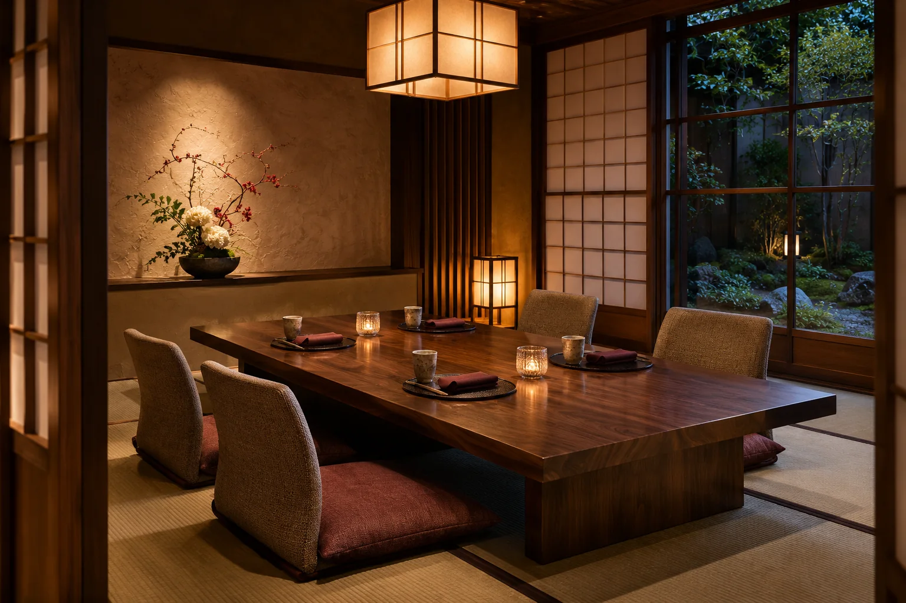
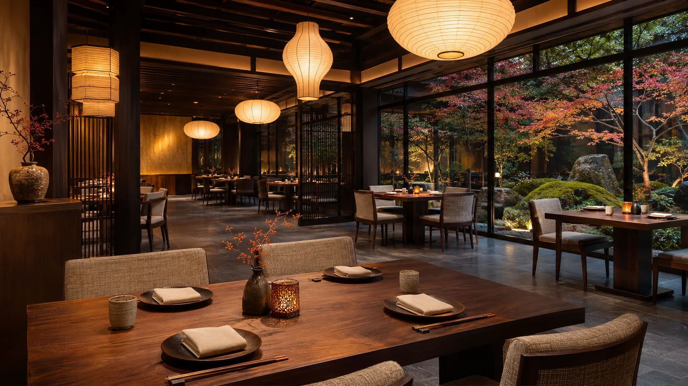

Спокойный выбор
Заранее подберите подходящую зону.

Выберите формат, дату и столик.
В PHP-версии форма отправит заявку для последующего подтверждения. На GitHub Pages она сохранится локально и не резервирует стол.
Учебная концепция · все бизнес-данные вымышленыЗаранее подберите подходящую зону.
Укажите повод или предпочтения.
Заявка — запрос, бронь подтверждается отдельно.
Схема выбора помогает указать предпочтительный столик, но не показывает реальную доступность.
Выберите зону и предпочтительный стол. Схема не подтверждает наличие.

Зона не выбрана. Выбор стола — только пожелание.
В локальном PHP-режиме она сохраняется как запрос; сотрудник должен подтвердить её по телефону. На Pages запись остаётся только в браузере.
Да, добавьте их в поле пожеланий. Не отправляйте личные медицинские сведения в демонстрационной версии.
В меню концепции есть три вымышленных дегустационных формата. Уточните состав и аллергены перед реальным заказом.